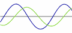
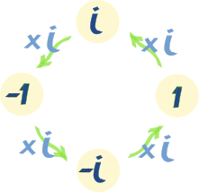

Imaginary Numbers
| An Imaginary Number, when squared, gives a negative result. |
Try
Let's try squaring some numbers to see if we can get a negative result:
- 2 × 2 = 4
- (−2) × (−2) = 4 (because a negative times a negative gives a positive)
- 0 × 0 = 0
- 0.1 × 0.1 = 0.01
No luck! Always positive, or zero.
It seems like we cannot multiply a number by itself to get a negative answer ...
|
... but imagine that there is such a number (call it i for imaginary) that could do this: i × i = −1
Would it be useful, and what could we do with it? |
Well, by taking the square root of both sides we get this:
 |
| Which means that i is the answer to the square root of −1. |
Which is actually very useful because ...
... by simply accepting that i exists we can solve things
that need the square root of a negative number.
Let us have a go:
Example: What is the square root of −9 ?
Hey! that was interesting! The square root of −9 is simply the square root of +9, times i.
In general:
√(−x) = i√x
So long as we keep that little "i" there to remind us that we still
need to multiply by √−1 we are safe to continue with our solution!
Using i
Example: What is (5i)2 ?
Interesting! We used an imaginary number (5i) and ended up with a real solution (−25).
Imaginary numbers can help us solve some equations:
Example: Solve x2 + 1 = 0
Using Real Numbers there is no solution, but now we can solve it!
Subtract 1 from both sides:
Take the square root of both sides:
Answer: x = −i or +i
Check:
- (−i)2 + 1 = (−i)(−i) + 1 = +i2 + 1 = −1 + 1 = 0
- (+i)2 +1 = (+i)(+i) +1 = +i2 +1 = −1 + 1 = 0
Unit Imaginary Number
The square root of minus one √(−1) is the "unit" Imaginary Number, the equivalent of 1 for Real Numbers.
In mathematics the symbol for √(−1) is i for imaginary.
Can you take the square root of −1?
Well i can!
Examples of Imaginary Numbers
| i | 12.38i | −i | 3i/4 | 0.01i | πi |
Imaginary Numbers are not "Imaginary"
Imaginary Numbers were once thought to be impossible, and so they were called "Imaginary" (to make fun of them).
But then people researched them more and discovered they were actually useful and important because they filled a gap in mathematics ... but the "imaginary" name has stuck.
And that is also how the name "Real Numbers" came about (real is not imaginary).
Imaginary Numbers are Useful

Complex Numbers
Imaginary numbers become most useful when combined with real numbers to make complex numbers like 3+5i or 6−4i
Spectrum Analyzer
Those cool displays you see when music is playing? Yep, Complex Numbers are used to calculate them! Using something called "Fourier Transforms".
In fact many clever things can be done with sound using Complex Numbers, like filtering out sounds, hearing whispers in a crowd and so on.
It is part of a subject called "Signal Processing".
Electricity

AC (Alternating Current) Electricity changes between positive and negative in a sine wave.
When we combine two AC currents they may not match properly, and it can be very hard to figure out the new current.
But using complex numbers makes it a lot easier to do the calculations.
And the result may have "Imaginary" current, but it can still hurt you!
Mandelbrot Set
The beautiful Mandelbrot Set (part of it is pictured here) is based on Complex Numbers.
Quadratic Equation

The Quadratic Equation, which has many uses,
can give results that include imaginary numbers
Also Science, Quantum mechanics and Relativity use complex numbers.
Interesting Property
The Unit Imaginary Number, i, has an interesting property. It "cycles" through 4 different values each time we multiply:
|
 | ||||||||||||||||
So we have this:
| i = √−1 | i2 = −1 | i3 = −√−1 | i4 = +1 |
| i5 = √−1 | i6 = −1 | ...etc |
Example What is i10 ?
And that leads us into another topic, the complex plane:

Conclusion
The unit imaginary number, i, equals the square root of minus 1
Imaginary Numbers are not "imaginary", they really exist and have many uses.